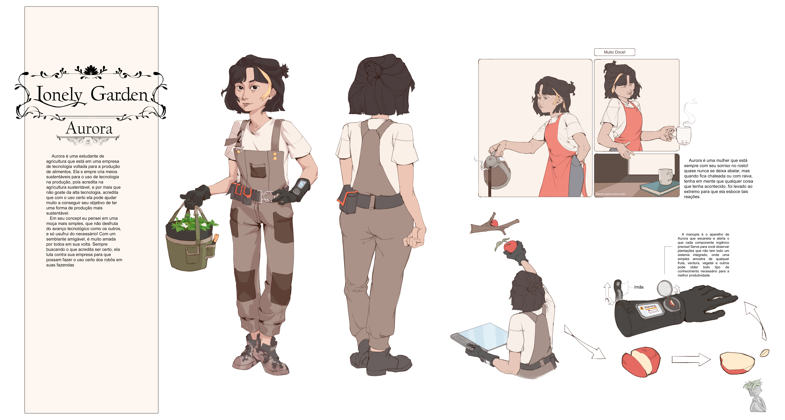
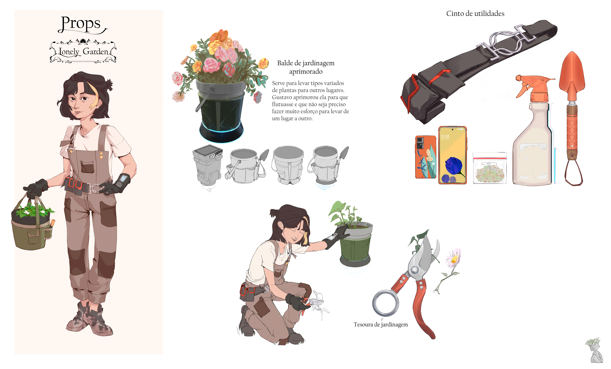
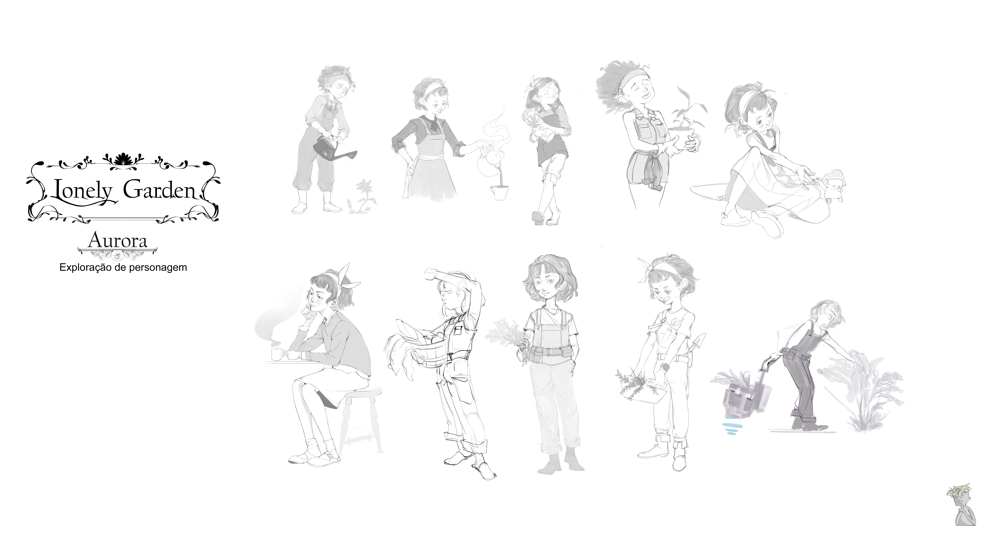
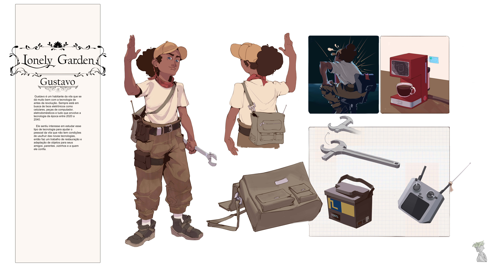
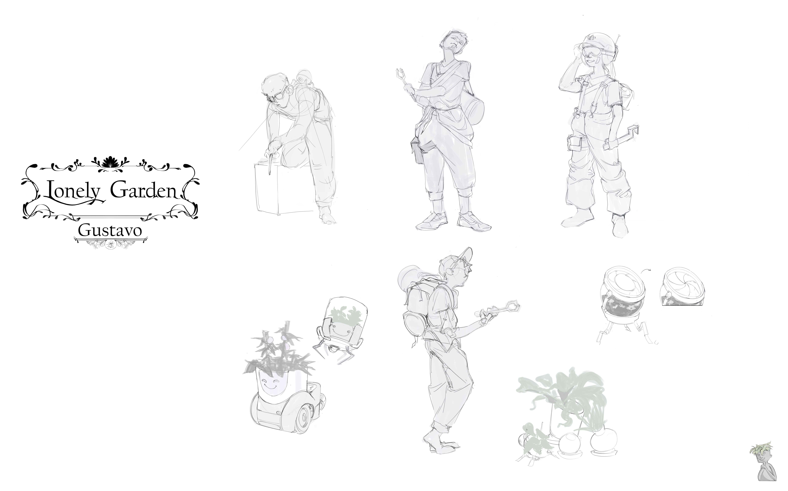
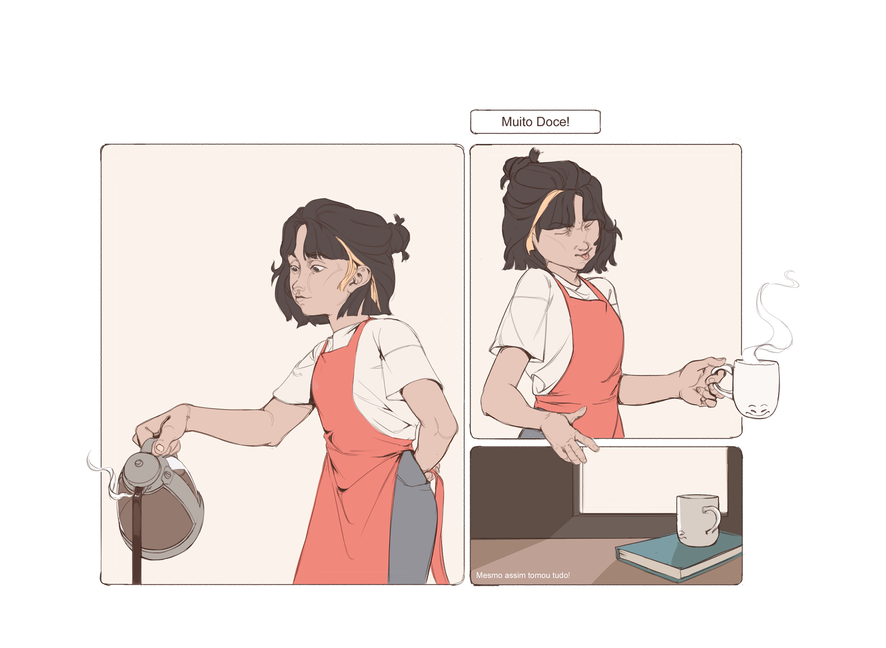

PERSONAL PROJECT
Lonely Garden is a personal project I've been developing for a while, though it's only in the past few weeks that I started giving it real visual shape. After discovering the Solarpunk movement, I wanted to build something around that aesthetic — a farming game in the spirit of Stardew Valley, reimagined through a solarpunk lens: cozy technology, greenery reclaiming architecture, and a gentler relationship between people and machines. What's here is an early batch of concepts I'm happy with, and a direction I'm looking forward to developing further.